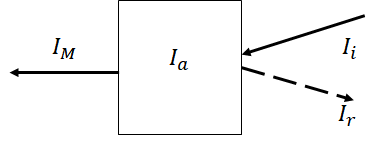

历史物理：黑体辐射*
Table of Contents
目前不适合看发布以调试
按照历史顺序介绍黑体辐射
1. 参考
- 曹则贤. 黑体辐射公式的多种推导及其在近代物理构建中的意义(Ⅹ)[J]. 物理, 2022, 51(8): 559-565. DOI: 10.7693/wl20220808
- 泰勒猫爱丽丝：黑体辐射的故事
前置知识：
- 热力统计－熵、麦克斯韦
2. 基尔霍夫提出
基尔霍夫 Kirchhoff 和本生 Bunsen
对于物质升温后发出不同颜色光感兴趣——研究物质辐射能量的规律。
\(M\) 辐射出射度：每平方米多大功率能量
辐射强度依赖什么？ 自然认为与温度相关，不同频率上辐射能量（分配）应当也不同。
即写成 \(M(\nu,T)\)
下面进一步展开与其它物理量可能的关系
辐射和吸收
辐射的过程——吸收率的定义 
\begin{equation} \label{eq:3} \alpha = \frac{I_{a}}{I_i}\leq 1 \end{equation}当 \(\alpha=1\) 所有外界输出都吸收——变成黑体。
(当考虑完全吸收，即黑体时，这相当于创造了一个理想模型，简化思路——不需要考虑特定物质对于不同吸收不同的规律——所有的黑体吸收率是相同的)
在实验和理论上给出了 \(M(\nu,T)=\alpha(\nu,T) B(\nu,T)\) \(\alpha\) 为吸收率。
理论推导
对于热平衡，辐射的能量就等于吸收的能量 \(E_{i}=E_{o}\)
将入射能量写成分配在频率上的函数 \(\mathrm{d}E =B \mathrm{d}\nu\) ，那么辐射
\begin{gather*} M \mathrm{d}\nu = \alpha \mathrm{d}E \\ M = \alpha B \end{gather*}这里并没有给出什么，只是引入一些字母，（在黑体模型中）将辐射强度和吸收率关联。
白炽灯灯丝、未漆的房子、太阳都近似黑体，其中未漆墙的房子含义是你从外面看里面是黑色的，光进入而难以出来。于是之后简化材料（也可以认为是专门为黑体给了一个符号），将这种困住外来能量的容器当作黑体
(这时并不要求内部材料吸收，只要入口极小（如光）进入之后难以出来，就等价于黑体)
但腔内有温度和辐射场，从小口会有辐射自发散出，这就是黑体辐射。
不过当时并不能做出均匀温度、高分辨率的温度计，然而可以想到这个模型应当有一个普世“简单”的规律
3. 斯特藩－玻耳兹曼定律
斯特藩 Stefan 与杜隆 利用沸腾金属完成黑体实验。
实验归纳出：辐射强度与温度四次方成正比
\begin{equation*} J=\sigma T^{4}\quad\sigma=5.67\times 10^{-8} \text{W/(m$^2\cdot$K$^{4}$)} \end{equation*}此处 \(J\) 相当于对所有频率光积分得到了每平米辐射的功率 \(J(T)=\int M(\nu,T) \mathrm{d}\nu\)
Bolzmann 给出了理论解释
利用辐射压
假设辐射强度为 \(u(T)\) ，取辐射能量密度为 \(u\) ,体积 \(V\)，则总能量 \(U=uV\)
?由电动力学，光压为
\begin{equation*} p=\frac{1}{3}u \end{equation*}正确做法：
\begin{gather*} U=uV\\ \mathrm{d}U=u \mathrm{d}V\\ \cdots \end{gather*}我没用标准方法
已知有 Maxwell 关系
\begin{equation} \label{eq:4} \left( \frac{\partial S}{\partial V} \right)_T = \left( \frac{\partial P}{\partial T} \right)_V \end{equation}利用 \(\mathrm{d} U=T \mathrm{d}S-p \mathrm{d}V\) 的 ? \(S = (U+pV)/T\)
\begin{gather*} \frac{1}{T}\frac{\partial U+pV}{\partial V}=\frac{1}{3}\frac{\partial u}{\partial T}\\ \frac{\partial uV}{\partial V}+p=\frac{T}{3}\frac{\partial u}{\partial T} \end{gather*}下面在数学上不严谨
\begin{gather*} U=uV\\ U=Q+W\\ \mathrm{d} U=T \mathrm{d}S-p \mathrm{d}V \\ \frac{\partial uV}{\partial V}=T\frac{\partial S}{\partial V}-p \\ u=T \frac{\partial p}{\partial T}-p \\ u=T \frac{1}{3}\frac{\partial u}{\partial T}-\frac{1}{3}u \end{gather*}总之得到
\begin{gather*} \frac{\mathrm{d}T}{T}=\frac{\mathrm{d}u}{4u} \\ \ln T = C\frac{1}{4}\ln u \\ u=CT^4 \quad\blacksquare \end{gather*}得到了能量密度，现在找出辐射的能量 \(M\) 和能量密度 \(u\) 关系
(单位上， M: J/m2 u: J/m3)
不过依然没有得到和频率的关系
4. 维恩位移定律
5. 普朗克的内插法
在准备其它了